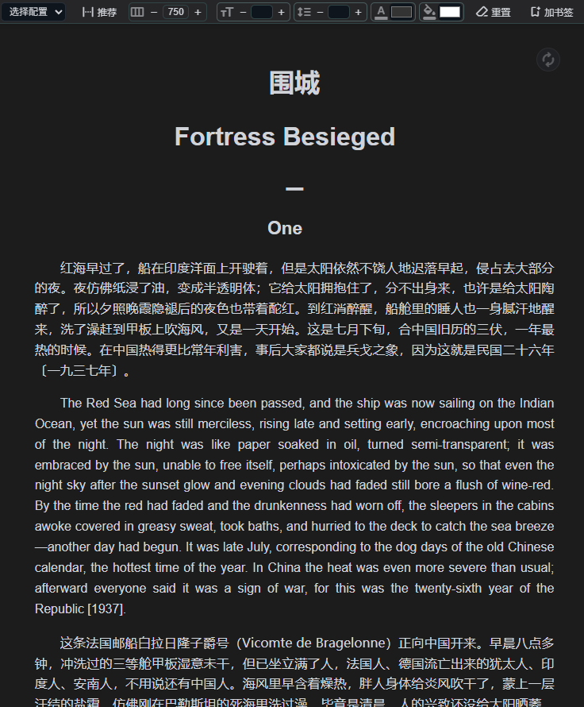
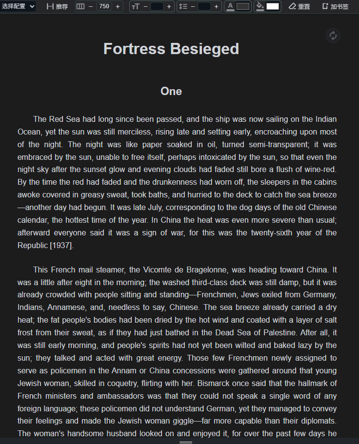
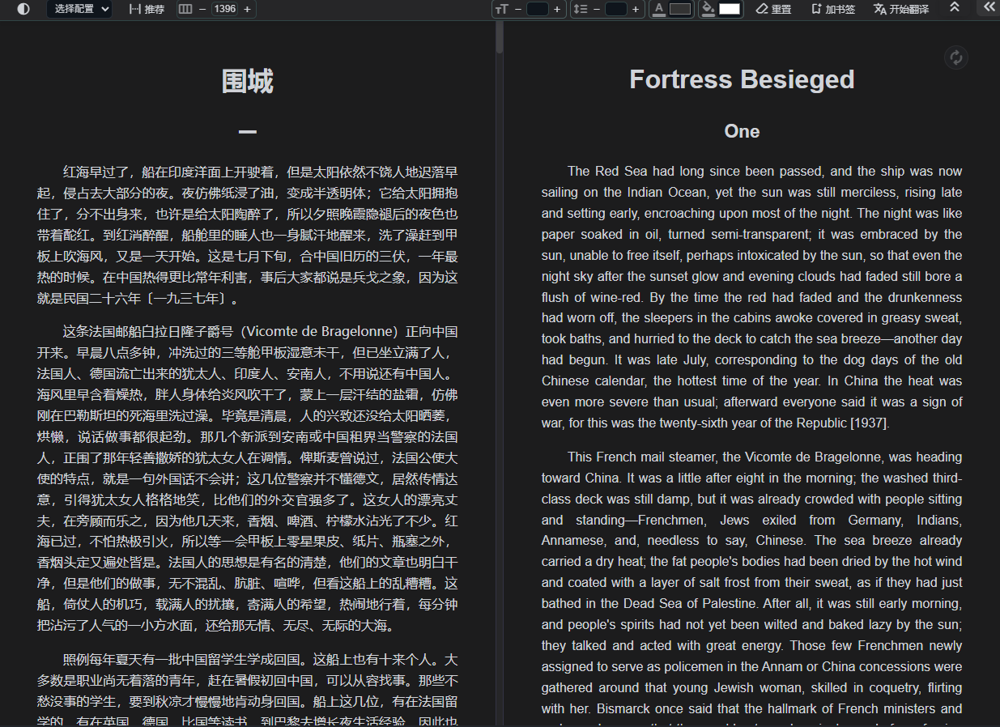

三种翻译排版
AI 翻译有三种显示方式，在阅读设置的「AI 翻译」分区里切换。
行间对照
每一段原文后面紧跟它的译文，原文和译文在同一栏里上下排列。
- 适合逐句核对，或想边看原文边看译文。
- 篇幅会比原文长。

仅译文
只显示译文，原文不再显示。
- 适合只想读译文的情况。
- 需要核对原文时，切回行间对照即可。

双列对照
原文和译文左右并排，两列同步滚动。
- 适合大屏幕。
- 「双列总宽度」可以调整两列合起来的总宽度，每列各占一半。

译文主题
译文部分可以套用不同的视觉主题（默认、羊皮纸、细边框），用来和原文区分开。